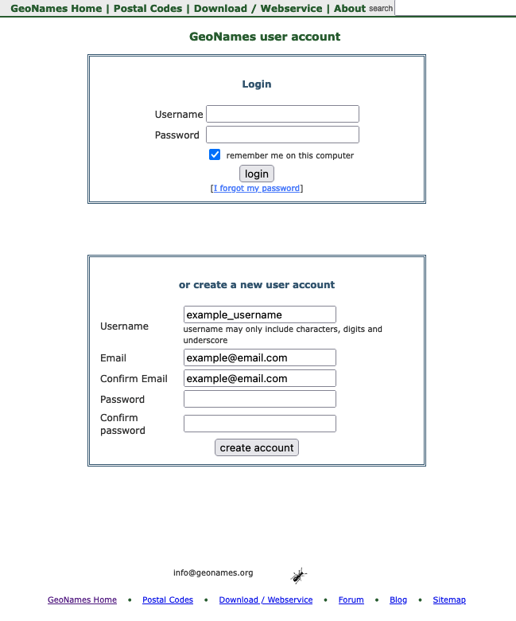

#install.packages("geonames")
library(geonames)6 APIs
Note
Effective Data Science is still a work-in-progress. This chapter is largely complete and just needs final proof reading.
If you would like to contribute to the development of EDS, you may do so at https://github.com/zakvarty/data_science_notes.
6.1 Aquiring Data Via an API

We’ve already established that you can’t always rely on tidy, tabular data to land on your desk.
Sometimes you are going to have to go out and gather data for yourself. We have already seen how to scrape information directly from the HTML source of a webpage. But surely there has to be an easer way. Thankfully, there often is!
In this chapter we will cover the basics of obtaining data via an API. This material draws together the Introduction to APIs book by Brian Cooksey and the DIY web data section of STAT545 at the University of British Columbia.
6.2 Why do I need to know about APIs?
An API, or application programming interface, is a set of rules that allows different software applications to communicate with each other.
As a data scientist, you will often need to access data that is stored on remote servers or in cloud-based services. APIs provide a convenient way for data scientists to programmatically retrieve this data, without having to manually download data sets or and process them locally on their own computer.
This has multiple benefits including automation and standardisation of data sharing.
Automation: It is much faster for a machine to process a data request than a human. Having a machine handling data requests also scales much better as either the number or the complexity of data requests grows. Additionally, there is a lower risk of introducing human error. For example, a human might accidentally share the wrong data, which can have serious legal repercussions.
Standardisation: Having a machine process data requests requires the format of these requests and the associated responses to be standardised. This allows data sharing and retrieval to become a reproducible and programmatic aspect of our work.
6.3 What is an API?
So then, if APIs are so great, what exactly are they?
In human-to-human communication, the set of rules governing acceptable behaviour is known as etiquette. Depending on when or where you live, social etiquette can be rather strict. The rules for computer-to-computer communication take this to a whole new level, because with machines there can be no room left for interpretation.
The set of rules governing interactions between computers or programmes is known as a protocol.
APIs provide a standard protocol for different programs to interact with one another. This makes it easier for developers to build complex systems by leveraging the functionality of existing services and platforms. The benefits of working in a standardised and modular way apply equally well to sharing data as they do to writing code or organising files.
There are two sides to communication and when machines communicate these are known as the server and the client.

Servers can seem intimidating, because unlike your laptop or mobile phone they don’t have their own input and output devices; they have no keyboard, no monitor, and no a mouse. Despite this, servers are just regular computers that are designed to store data and run programmes. Servers don’t have their own input or output devices because they are intended to be used remotely, via another computer. There is no need for a screen or a mouse if the user is miles away. Nothing scary going on here!
People often find clients much less intimidating - they are simply any other computer or application that might contact the sever.
6.4 HTTP
This leads us one step further down the rabbit-hole. An API is a protocol that defines the rules of how applications communicate with one another. But how does this communication happen?
HTTP (Hypertext Transfer Protocol) is the dominant mode communication on the World Wide Web. You can see the secure version of HTTP, HTTPS, at the start of most web addresses up at the top of your browser. For example:
https://www.zakvarty.com/blogHTTP is the foundation of data communication on the web and is used to transfer files (such as text, images, and videos) between web servers and clients.

To understand HTTP communications, I find it helpful to imagine the client and the server as being a customer and a waiter at a restaurant. The client makes some request to the server, which then tries to comply before giving a response. The server might respond to confirm that the request was completed successfully. Alternatively, the server might respond with an error message, which is (hopefully) informative about why the request could not be completed.
This request-response model is the basis for HTTP, the communication system used by the majority of APIs.
6.5 HTTP Requests
An HTTP request consists of:
- Uniform Resource Locator (URL) [unique identifier for a thing]
- Method [tells server the type of action requested by client]
- Headers [meta-information about request, e.g. device type]
- Body [Data the client wants to send to the server]
6.5.1 URL
The URL in a HTTP request specifies where that request is going to be made, for example http://example.com.
6.5.2 Method
The action that the client wants to take is indicated by a set of well-defined methods or HTTP verbs. The most common HTTP verbs are GET, POST, PUT, PATCH, and DELETE.
The GET verb is used to retrieve a resource from the server, such as a web page or an image. The POST verb is used to send data to the server, such as when submitting a form or uploading a file. The PUT verb is used to replace a resource on the server with a new one, while the PATCH verb is used to update a resource on the server without replacing it entirely. Finally, the DELETE verb is used to delete a resource from the server.
In addition to these common HTTP verbs, there are also several less frequently used verbs. These are used for specialized purposes, such as requesting only the headers of a resource, or testing the connectivity between the client and the server.
6.5.3 Header
The request headers contain meta-information about the request. This is where information about the device type would be included within the request.
6.5.4 Body
Finally, the body of the request contains the data that the client is providing to the server.
6.6 HTTP Responses
When the server receives a request it will attempt to fulfil it and then send a response back to the client.

A response has a similar structure to a request apart from:
- responses do not have a URL,
- responses do not have a method,
- responses have a status code.
6.6.1 Status Codes
The status code is a 3 digit number, each of which has a specific meaning. Some common error codes that you might (already have) come across are:
- 200: Success,
- 404: Page not found (all 400s are errors),
- 503: Page down.
In a data science context, a successful response will return the requested data within the data field. This will most likely be given in JSON or XML format.
6.7 Authentication
Now that we know how applications communicate, you might ask how we can control who has access to the API and what types of request they can make. This can be done by the server setting appropriate permissions for each client. But then how does the server verify that the client is really who is claims to be?
Authentication is a way to ensure that only authorized clients are able to access an API. This is typically done by the server requiring each client to provide some secret information that uniquely identifies them, whenever they make requests to the API. This information allows the API server to validate the authenticity this user before it authorises the request.
6.7.1 Basic Authentication
There are various ways to implement API authentication.
Basic authentication involves each legitimate client having a username and password. An encrypted version of these is included in the Authorization header of the HTTP request. If the hear matches with the server’s records then the request is processed. If not, then a special status code (401) is returned to the client.
Basic authentication is dangerous because it does not put any restrictions on what a client can do once they are authorised. Additional, individualised restrictions can be added by using an alternative authentication scheme.
6.7.2 API Key Authentication
An API key is long, random string of letters and numbers that is assigned to each authorised user. An API key is distinct from the user’s password and keys are typically issued by the service that provides an API. Using keys rather than basic authentication allows the API provider to track and limit the usage of their API.
For example, a provider may issue a unique API key to each developer or organization that wants to use the API. The provider can then limit access to certain data. They could also limit the number of requests that each key can make in a given time period or prevent access to certain administrative functions, like changing passwords or deleting accounts.
Unlike Basic Authentication, there is no standard way of a client sharing a key with the server. Depending on the API this might be in the Authorization field of the header, at the end of the URL (http://example.com?api_key=my_secret_key), or within the body of the data.
6.8 API wrappers
We’ve learned a lot about how the internet works. Fortunately, a lot of the time we won’t have to worry about all of that new information other than for debugging purposes.
In the best case scenario, a very kind developer has written a “wrapper” function for the API. These wrappers are functions in R that will construct the HTTP request for you. If you are particularly lucky, the API wrapper will also format the response for you, converting it from XML or JSON back into an R object that is ready for immediate use.
6.9 {geonames} wrapper
rOpenSci has a curated list of many wrappers for accessing scientific data using R. We will focus on the GeoNames API, which gives open access to a geographical database. To access this data, we will use wrapper functions provided by the {geonames} package.
The aim here is to illustrate the important steps of getting started with a new API.
6.9.1 Set up
Before we can get any data from the GeoNames API, we first need to do a little bit of set up.
- Install and load
{geonames}from CRAN
- Create a user account for the GeoNames API

- Activate the account (see activation email)
Enable the free web services for your GeoNames account by logging in at this link.
Tell R your credentials for GeoNames.
Warning
We could use the following code to tell R our credentials, but we absolutely should not.
options(geonamesUsername = "example_username")This would save our username as an environment variable, but it also puts our API credentials directly into the script. If we share the script with others (internally, externally or publicly) we would be sharing our credentials too. Not good!
6.9.2 Keep it Secret, Keep it Safe
The solution to this problem is to add our credentials as environment variables in our .Rprofile rather than in this script. The .Rprofile is an R script that is run at the start of every session. It can be created and edited directly, but can also be created and edited from within R.
To make/open your .Rprofile use the edit_r_profile() function from the usethis package.
library(usethis)
usethis::edit_r_profile()Within this file, add options(geonamesUsername="example_username") on a new line, remembering to replace example_username with your own GeoNames username.
The final step is to check this this file ends with a blank line, save it and restart R. Then we are all set to start using {geonames}.
This set up procedure is indicative of most API wrappers, but of course the details will vary between each API. This is why good documentation is important!
If you are using renv to track the versions of R and the packages you are using take care. For renv to be effective you have to place your project level .Rprofile under version control - this means you might accidentally share your API credentials.
A workaround for this problem is to create an R file that you source() from within the project level .Rprofile but is included in .gitignore, so that your credentials remain secret.
6.9.3 Using {geonames}
GeoNames has a whole host of different geo-datasets that you can explore. As a first example, let’s get all of the geo-tagged wikipedia articles that are within 1km of Imperial College London.
imperial_coords <- list(lat = 51.49876, lon = -0.1749)
search_radius_km <- 1
imperial_neighbours <- geonames::GNfindNearbyWikipedia(
lat = imperial_coords$lat,
lng = imperial_coords$lon,
radius = search_radius_km,
lang = "en", # english language articles
maxRows = 500 # maximum number of results to return
)Looking at the structure of imperial_neighbours we can see that it is a data frame with one row per geo-tagged wikipedia article.
str(imperial_neighbours)
#> 'data.frame': 204 obs. of 13 variables:
#> $ summary : chr "The Department of Mechanical Engineering is responsible for teaching and research in mechanical engineering at "| __truncated__ "Imperial College Business School is a global business school located in London. The business school was opened "| __truncated__ "Exhibition Road is a street in South Kensington, London which is home to several major museums and academic est"| __truncated__ "Imperial College School of Medicine (ICSM) is the medical school of Imperial College London in England, and one"| __truncated__ ...
#> $ elevation : chr "20" "18" "19" "24" ...
#> $ feature : chr "edu" "edu" "landmark" "edu" ...
#> $ lng : chr "-0.1746" "-0.1748" "-0.17425" "-0.1757" ...
#> $ distance : chr "0.0335" "0.0494" "0.0508" "0.0558" ...
#> $ rank : chr "81" "91" "90" "96" ...
#> $ lang : chr "en" "en" "en" "en" ...
#> $ title : chr "Department of Mechanical Engineering, Imperial College London" "Imperial College Business School" "Exhibition Road" "Imperial College School of Medicine" ...
#> $ lat : chr "51.498524" "51.4992" "51.4989722222222" "51.4987" ...
#> $ wikipediaUrl: chr "en.wikipedia.org/wiki/Department_of_Mechanical_Engineering%2C_Imperial_College_London" "en.wikipedia.org/wiki/Imperial_College_Business_School" "en.wikipedia.org/wiki/Exhibition_Road" "en.wikipedia.org/wiki/Imperial_College_School_of_Medicine" ...
#> $ countryCode : chr NA "AE" NA "GB" ...
#> $ thumbnailImg: chr NA NA NA NA ...
#> $ geoNameId : chr NA NA NA NA ...To confirm we have the correct location we can inspect the title of the first five neighbours.
imperial_neighbours$title[1:5]
#> [1] "Department of Mechanical Engineering, Imperial College London"
#> [2] "Imperial College Business School"
#> [3] "Exhibition Road"
#> [4] "Imperial College School of Medicine"
#> [5] "Department of Civil and Environmental Engineering, Imperial College London"Nothing too surprising here, mainly departments of the college and Exhibition Road, which runs along one side of the campus. These sorts of check are important - I initially forgot the minus in the longitude and was getting results in East London!
6.10 What if there is no wrapper?
If there is not a wrapper function, we can still access APIs fairly easilty using the httr package.
We will look at an example using OMDb, which is an open source version of IMDb, to get information about the movie Mean Girls.
To use the OMDB API you will once again need to request a free API key, follow a verification link and add your API key to your .Rprofile.
# Add this to .Rprofile, pasting in your own API key
options(OMDB_API_Key = "PASTE YOUR KEY HERE")You can then restart R and safely access your API key from within your R session.
# Load your API key into the current R session
ombd_api_key <- getOption("OMDB_API_Key")Using the documentation for the API, requests have URLs of the following form, where terms in angular brackets should be replaced by you.
http://www.omdbapi.com/?t=<TITLE>&y=<YEAR>&plot=<LENGTH>&r=<FORMAT>&apikey=<API_KEY>With a little bit of effort, we can write a function that composes this type of request URL for us. We will using the glue package to help us join strings together.
Running the example we get:
mean_girls_request <- omdb_url(
title = "mean+girls",
year = "2004",
plot = "short",
format = "json",
api_key = getOption("OMDB_API_Key"))We can then use the httr package to construct our request and store the response we get.
#> [1] 200Thankfully it was a success! If you get a 401 error code here, check that you have clicked the activation link for your API key.
The full structure of the response is quite complicated, but we can easily extract the requested data using content()
#> $Title
#> [1] "Mean Girls"
#>
#> $Year
#> [1] "2004"
#>
#> $Rated
#> [1] "PG-13"
#>
#> $Released
#> [1] "30 Apr 2004"
#>
#> $Runtime
#> [1] "97 min"
#>
#> $Genre
#> [1] "Comedy"
#>
#> $Director
#> [1] "Mark Waters"
#>
#> $Writer
#> [1] "Rosalind Wiseman, Tina Fey"
#>
#> $Actors
#> [1] "Lindsay Lohan, Jonathan Bennett, Rachel McAdams"
#>
#> $Plot
#> [1] "Cady Heron is a hit with The Plastics, the A-list girl clique at her new school, until she makes the mistake of falling for Aaron Samuels, the ex-boyfriend of alpha Plastic Regina George."
#>
#> $Language
#> [1] "English, German, Vietnamese, Swahili"
#>
#> $Country
#> [1] "United States, Canada"
#>
#> $Awards
#> [1] "7 wins & 25 nominations"
#>
#> $Poster
#> [1] "https://m.media-amazon.com/images/M/MV5BMjE1MDQ4MjI1OV5BMl5BanBnXkFtZTcwNzcwODAzMw@@._V1_SX300.jpg"
#>
#> $Ratings
#> $Ratings[[1]]
#> $Ratings[[1]]$Source
#> [1] "Internet Movie Database"
#>
#> $Ratings[[1]]$Value
#> [1] "7.1/10"
#>
#>
#> $Ratings[[2]]
#> $Ratings[[2]]$Source
#> [1] "Rotten Tomatoes"
#>
#> $Ratings[[2]]$Value
#> [1] "84%"
#>
#>
#> $Ratings[[3]]
#> $Ratings[[3]]$Source
#> [1] "Metacritic"
#>
#> $Ratings[[3]]$Value
#> [1] "66/100"
#>
#>
#>
#> $Metascore
#> [1] "66"
#>
#> $imdbRating
#> [1] "7.1"
#>
#> $imdbVotes
#> [1] "416,002"
#>
#> $imdbID
#> [1] "tt0377092"
#>
#> $Type
#> [1] "movie"
#>
#> $DVD
#> [1] "01 Aug 2013"
#>
#> $BoxOffice
#> [1] "$86,058,055"
#>
#> $Production
#> [1] "N/A"
#>
#> $Website
#> [1] "N/A"
#>
#> $Response
#> [1] "True"6.11 Wrapping up
We have learned a bit more about how the internet works, the benefits of using an API to share data and how to request data from Open APIs.
When obtaining data from the internet it’s vital that you keep your credentials safe, and that don’t do more work than is needed.
Keep your API keys out of your code. Store them in your
.Rprofile(and make sure this is not under version control!)Scraping is always a last resort. Is there an API already?
Writing your own code to access an API can be more painful than necessary.
Don’t repeat other people, if a suitable wrapper exists then use it.
6.12 Session Information
R version 4.3.1 (2023-06-16)
Platform: x86_64-apple-darwin20 (64-bit)
locale: en_US.UTF-8||en_US.UTF-8||en_US.UTF-8||C||en_US.UTF-8||en_US.UTF-8
attached base packages: stats, graphics, grDevices, utils, datasets, methods and base
other attached packages: geonames(v.0.999)
loaded via a namespace (and not attached): digest(v.0.6.33), R6(v.2.5.1), fastmap(v.1.1.1), xfun(v.0.41), glue(v.1.6.2), knitr(v.1.45), htmltools(v.0.5.7), rmarkdown(v.2.25), cli(v.3.6.2), pander(v.0.6.5), compiler(v.4.3.1), httr(v.1.4.7), rstudioapi(v.0.15.0), tools(v.4.3.1), curl(v.5.2.0), evaluate(v.0.23), Rcpp(v.1.0.11), yaml(v.2.3.8), rlang(v.1.1.2), jsonlite(v.1.8.8) and htmlwidgets(v.1.6.4)